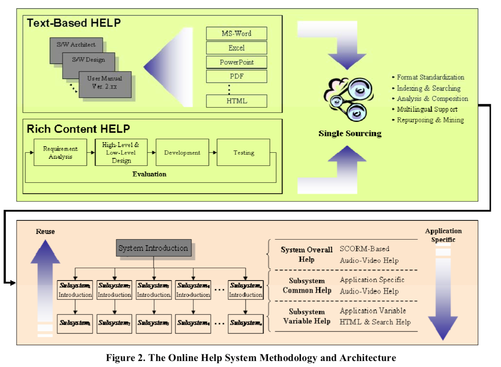
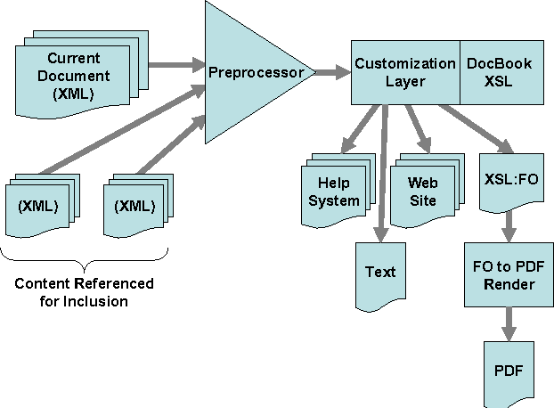

Document Engineering and Digital Labor
Market-Oriented Big Data & IoT - 고려대
Market-Oriented Big Data & IoT
- 강의제목: “Document Engineering and Digital Labor”
- 강의일시
- 2019년 8월 29일(목) 16:30 ~ 18:30
- 강의장소: 고려대 Hyundai Motor Hall
- 강의내용
- Document Engineering
- One Source Multi-Use: Authoring Automation
- Digital Labor
- RPA Software
데이터 과학자
.pull-left[  ]
]
.pull-right[ ]
.footnote[ - 삼정 KPMG 데이터 과학자 - 연세대학교 겸임교수, “데이터 사이언스 입문” - 이광춘(2019) “데이터 사이언스, 타이디버스로 향하다”, 마이크로소프트웨어 395호 - 데이터 사이언스 미트업 운영 - 소프트웨어 카펜트리(Software Carpentry) 강사 (Kwangchun Lee) - Cloudera Conference 2018 - Seoul: 기계의 역습 - 설명가능한 기계학습]
Online help framework - ACM 2007
.pull-left[  ]
]
.pull-right[ ]
Hewlett-Packard Company - ACM 2007
.pull-left[  ]
]
.pull-right[ ]
No More Microsoft Office
OSMU - R Markdown and friends
BMI 데이터 사이언스 보고서
author_carpentry_kr/tutorial/reproducible_finance/reproducible_finance.Rmd
.footnote[ 재현가능한 데이터 사이언스 - BMI]
Document Engineering
.center[  ]
]
.footnote[ - 영문 이력서: PDF → 데이터프레임 - 영문 이력서: 데이터프레임 → PDF]
Digital Labor
파워포인트 슬라이드
RPA Software
파워포인트 슬라이드